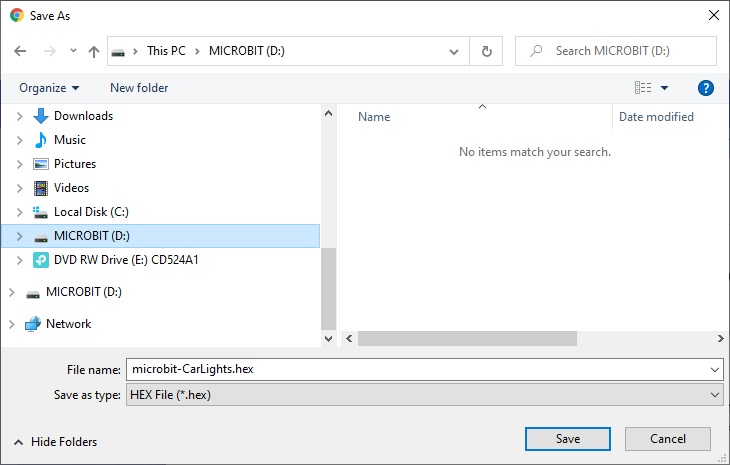

BCC Robotics Documentation yo
Development Environment
Microbit devices are programmed using a web-browser online at site: https://makecode.microbit.org/
Your project will be saved online. You can create a blockly project by pasting javascript into the javascript tab:

Downloading code to the microbit
You upload software to the microbit device by connecting the microbit via usb to your personal computer then press the download button on the web-browser and then select the micro-bit drive

Software
Mecanum Car
input.onButtonPressed(Button.A, function () {
wuKong.mecanumRun(wuKong.RunList.rear, 56)
strip.showRainbow(1, 360)
})
radio.onReceivedString(function (receivedString) {
if (receivedString == "F") {
wuKong.mecanumRun(wuKong.RunList.Front, 80)
} else if (receivedString == "B") {
wuKong.mecanumRun(wuKong.RunList.rear, 80)
} else if (receivedString == "L") {
wuKong.mecanumRun(wuKong.RunList.left, 80)
} else if (receivedString == "R") {
wuKong.mecanumRun(wuKong.RunList.right, 80)
} else if (receivedString == "S") {
wuKong.mecanumRun(wuKong.RunList.stop, 0)
}
})
input.onButtonPressed(Button.B, function () {
wuKong.mecanumStop()
strip.showColor(neopixel.colors(NeoPixelColors.Black))
})
let strip: neopixel.Strip = null
radio.setGroup(1)
wuKong.mecanumWheel(
wuKong.ServoList.S1,
wuKong.ServoList.S2,
wuKong.ServoList.S3,
wuKong.ServoList.S4
)
wuKong.setLightMode(wuKong.LightMode.BREATH)
strip = neopixel.create(DigitalPin.P16, 4, NeoPixelMode.RGB)
basic.forever(function () {
})
Joystick
radio.setGroup(1)
pins.setPull(DigitalPin.P13, PinPullMode.PullNone)
pins.setPull(DigitalPin.P14, PinPullMode.PullNone)
pins.setPull(DigitalPin.P15, PinPullMode.PullNone)
pins.setPull(DigitalPin.P16, PinPullMode.PullNone)
basic.forever(function () {
if (pins.digitalReadPin(DigitalPin.P15) == 0) {
radio.sendString("Open")
} else if (pins.digitalReadPin(DigitalPin.P13) == 0) {
radio.sendString("Close")
} else if (pins.digitalReadPin(DigitalPin.P16) == 0) {
radio.sendString("LEDL")
} else if (pins.digitalReadPin(DigitalPin.P14) == 0) {
radio.sendString("LEDR")
} else {
if (pins.analogReadPin(AnalogPin.P2) > 550 && (pins.analogReadPin(AnalogPin.P1) > 400 && pins.analogReadPin(AnalogPin.P1) < 600)) {
radio.sendString("F")
} else if (pins.analogReadPin(AnalogPin.P2) < 450 && (pins.analogReadPin(AnalogPin.P1) > 400 && pins.analogReadPin(AnalogPin.P1) < 600)) {
radio.sendString("B")
} else if (pins.analogReadPin(AnalogPin.P1) < 450 && (pins.analogReadPin(AnalogPin.P2) > 400 && pins.analogReadPin(AnalogPin.P2) < 600)) {
radio.sendString("L")
} else if (pins.analogReadPin(AnalogPin.P1) > 550 && (pins.analogReadPin(AnalogPin.P2) > 400 && pins.analogReadPin(AnalogPin.P2) < 600)) {
radio.sendString("R")
} else {
radio.sendString("S")
}
}
})